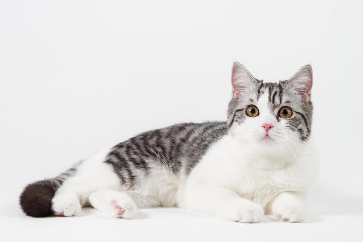

喵喵星球网
|
中国最早记载家猫的文献出现在西汉。而在此之前不论是各类文字记载或壁画、图腾等图像中均无猫的踪影。学界一度有这样的猜测：家猫是在西汉或稍前，通过与外国的贸易往来而进入中国的，一般认为是由波斯商人带入。 |
 2009年，《科学人》杂志曾经报道过，通过将近一千组DNA样本的对比分析，确定现今家猫的祖先源出同系，都是中东野猫。人类驯化猫的历史，较多的证据和资料记载大概是4500年前，由古埃及开始大量驯养野猫的。那中国的家猫又从何而来？ |
 猫对于埃及来说自古以来就是崇拜的对象，更具体而言，他们早期有着对于猫女神（cat-goddess）的崇拜，这使得猫对于他们而言具有更高的接受度。正是由于有着信仰，使得猫对于人也逐渐建立起了信任，能够进行饲养，繁育逐渐变成了家养猫。 |
起初，尼罗河流域的当地居民深受各种老鼠的骚扰，猫天然有着捕鼠能力，这使得猫在人们看来是“有用的”，“功用说”也成为了一种猫被广泛接受的假说。现在，对于城市中居住的人们来说，猫的功用并不是捕鼠，而是外貌、性格和陪伴。 |
| 首页 | 2 | 下一页 | 尾页 |
网页底部